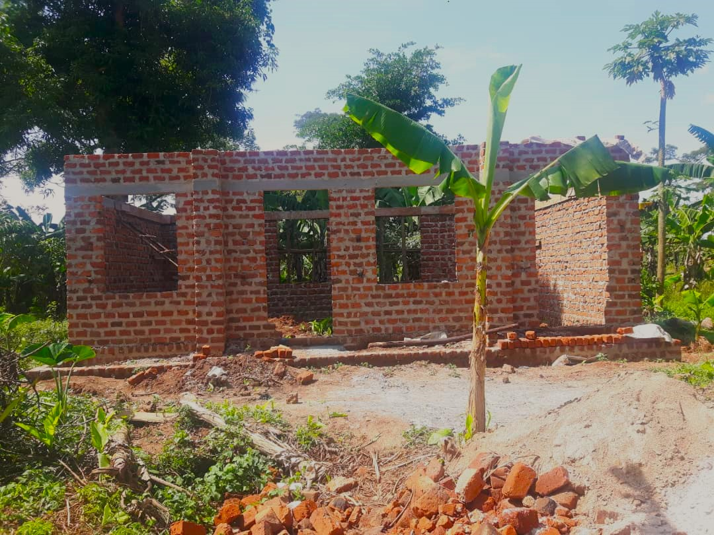
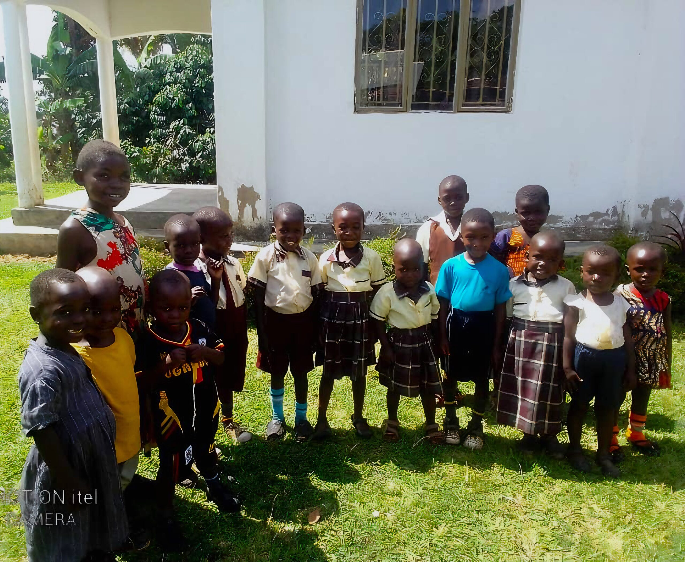
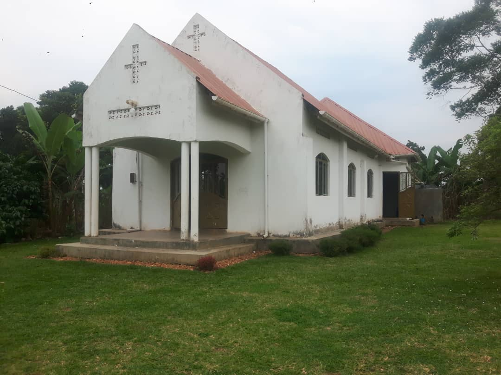
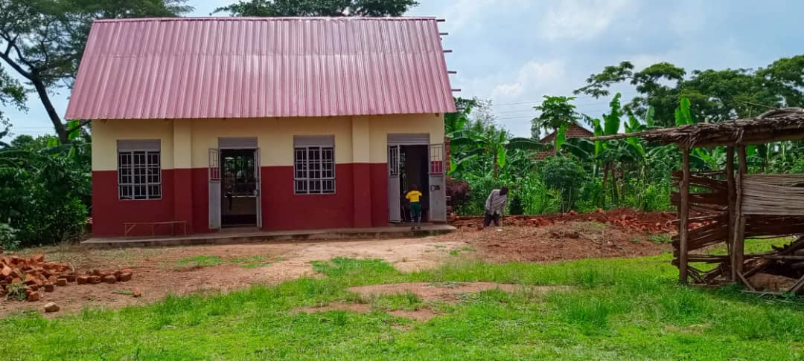

Under construction
Pre-School Construction
A three-block classroom for the children the ministry supports, growing as more pupils join.
Where support goes
What we are building now, and what comes next.
Support the work

A three-block classroom for the children the ministry supports, growing as more pupils join.
School supplies, nutrition and healthcare access for children, with local schools and community partners.
Looking ahead
Two planned projects will give young people in Kasozi practical skills to support themselves and their families.
Learning sewing skills for work and income.
Learning cultivation skills for stronger livelihoods.

A place of worship and gathering for the Kasozi community.

Finished, with more space now being added next to it.
Be part of the journey
Every act of support helps the ministry continue its programs and building projects.